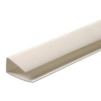
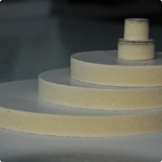
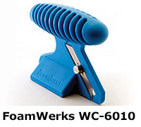
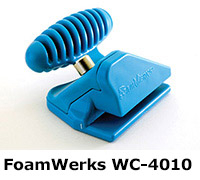
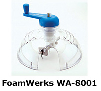
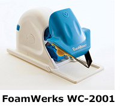
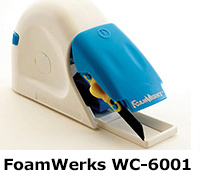
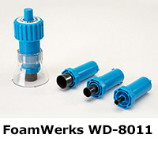
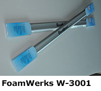
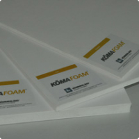

Листовые материалы
Пенокартон
- Применение и преимущества пенокартона
-
На первый взгляд, в самом названии "пенокартон" о материале уже все сказано. И все-таки различные марки отличаются друг от друга по цветам, типу покрытия, материалу основы и другим параметрам.
Состав и свойства:
Уникальность пенокартона заключается в исключительных свойствах синтетического материала, составляющего его основу. Каждый лист представляет собой плиту из вспененного полиуретана либо вспененного полистирола, оклеенную с обеих сторон защитным картонным покрытием, благодаря чему материал имеет высокую собственную жесткость при очень маленьком весе. Это самый легкий из листовых материалов. В единичных случаях вместо картона используется другой материал KAPA-PLAST.
Внутренний слой представляет собой вспененный полимерный материал. В настоящее время для изготовления пенокартона используются два принципиально различных материала - пенополистирол и пенополиуретан. Общим для них является то, что они не впитывают влагу и не набухают.
Основа - полиуретан
Помимо прочих преимуществ, характерных для всех видов картона (легкий вес, компактность, возможность всех видов печати), "тонкий" картон дешевле чисто целлюлозного, однако обладает теми же физико-механическими и эксплуатационными характеристиками:
- сочетание малого веса и достаточной прочности; высокий уровень жесткости;
- внутренний полиуретановый слой имеет закрытую ячеистую структуру, не впитывает влагу; все составляющие панелей химически инертны и не выделяют вредных для окружающей среды и человека летучих веществ.
- лучше держит форму, обладает отличной плоскостностью и хорошей размерной стабильностью, в том числе при изготовлении изделий большого размера (для которых полистирольный пенокартон слишком эластичен);
- высокая теплостойкость позволяет обрабатывать и долгосрочно использовать материал при температуре до +100 °С и выдерживать кратковременное воздействие температуры в +200 °С;
- внутренний полиуретановый слой устойчив к большинству видов клеящих веществ и растворителей;
- при угловом изгибании с внешней стороны материала отсутствуют характерные для картона деформации, угол получается ровным и гладким;
- легкость обработки и вырезания - в отличие от пенополистирола не ломается и не крошится при обработке;
- подходит для печати всеми стандартными видами чернил.
Стандартные размеры листов пенокартона КАРА - 1400 x 1000 мм, толщины - 5, 10мм
Области использования пенокартона:
- в полиграфии - как материал для печати, чаще всего трафаретной (шелкография), реже тампонной;
- оформление мест продаж (POS), различные фигурки (при использовании фигурной высечки), увеличенные в размерах макеты различных товаров и т.п., основа для наклеивания постеров;
- в выставочной индустрии - для изготовления недорогих одноразовых выставочных элементов, плит-вкладышей для мобильных стендов (может использоваться совместно с системой FLEXIFRAME или аналогами);
- оформление интерьеров - настенные планшеты, доски объявлений, информационные таблички, интерьерные указатели и т.д.;
- изготовление макетов в архитектуре;
- как материал для паспарту, объемный носитель для каширования фотографий, постеров, карт и т.д.
Пенокартон может использоваться только внутри помещений, так как картон гигроскопичен и не устойчив к влаге, а полистирол неустойчив к солнечным лучам.
- Профиль для пенокартона
-

Профиль для пенокартона - этот профиль выполняет важную защитную функцию, предохраняя торец от повреждений и заломов. Благодаря тому, что окантовочные профили выпускаются под лист 5 мм и 10 мм, они весьма универсальны и находят широкое применение как защитно-декоративный материал. Также профили могут применяться для изготовления стендов, табличек, информационных досок.
Наименование Размер мм. U-Profil 1550x5 - Пенокартон KAPA-PLAST (Германия)
-

Пенокартон KAPA-PLAST (Германия)
лёгкая плита из вспененного полиуретана, облицованная с двух сторон жестким влагостойким картоном с синтетическим покрытием. Материал не обладает огнестойкими свойствами (класс огнестойкости – В3). Не впитывает воду (за исключением краевых открытых пор). Пластиковое покрытие также влагонепроницаемый, покрытие устойчиво к клеям, краскам и черниламПрименение: пенокартон KAPA-PLAST (Германия) применяются для трафаретной и струйной печати, оформительских работ, изготовления декораций, мобильных выставочных стендов, моделирования, презентационных и несущих плит.
- Методы обработки:
- печать трафаретная, тампонная и струйная всеми видами чернил в т.ч. сольвентными
- каширование ручное и механизированное
- рисование и окраска распылением всеми красками в т.ч. содержащими растворители
- раскрой, порезка с помощью макетного ножа, выпиливание электро лобзиком.
Наименование Размер мм. KAPA-PLAST 1000х1400х5 - Инструмент для резки пенокартона
-
Инструмент для резки пенокартона FoamWerks (США)
Представляем первую в мире полную линию инструментов для резки и моделирования пенокартона! Инструменты FoamWerks позволяют обрабатывать пенокартон легко и точно. Теперь вы сможете быстро создавать профессиональные 3D модели, различные проекты, домашний декор и многое другое. Инструменты FoamWerks позволяют вырезать из пенокартона круги, прямые линии, V-образные канавки, скосы, отверстия, и другие формы.
Универсальный нож WC-6010 для резки пенокартона 45 и 90 градусов
Экономия времени и универсальность сочетаются в универсальном ноже для резки под 45 и 90 градусов. Просто поверните угловой блок базы, и модель WC-6010 превращается из прямого резака в резак для отреза под 45 градусов. Особенности: настраиваемые в глубину лезвия, эргономичная ручка и отсек для хранения лезвий. Нож включает в себя два лезвия. Используйте со сменными лезвиями WC-10, WC-25 или WC-100.
ВАЖНО: Всегда используйте подкладку из пенокартона при резке. Это позволит защитить инструмент и продлить срок службы лезвий.
Посмотреть видеоНаименование WC-6010 Нож WC-4010 для торцевания краев
С помощью этого ножа вы сможите создать идеальный прилегающий угол с торцованным краем. Эргономичная конструкция и лезвия двойного действия за одно движение сделают две операции. WC-4010 также имеет отсек хранения лезвий. Используйте со сменными лезвиями WC-10, WC-25 или WC-100.
ВАЖНО: Всегда используйте подкладку из пенокартона при резке. Это позволит защитить инструмент и продлить срок службы лезвий.
Посмотреть видеоНаименование WC-4010 Нож WA-8001 для вырезания окружностей
С помощью этого ножа вы легко сможете вырезать круги диаметром от 2,54 до 15,24 см. Центр показывает глубину режущего лезвия. Резак снабжен безопасным механизмом резки, магнитным слотом для лезвий и прозрачным акриловым куполом безопасности. Используйте со сменными лезвиями WA-5 или WA-25.
ВАЖНО: Всегда используйте подкладку из пенокартона при резке. Это позволит защитить инструмент и продлить срок службы лезвий.
Посмотреть видеоНаименование WC-8001 Нож WC-2001 для выборки V-образного реза
Применяя этот нож, Вы сможете вырезать в пенокартоне V-образные канавки высшего качества. Особенности: настраиваемые в глубину лезвия, магнитный слот для лезвий, место для хранения 5 лезвий. Используйте сменные лезвия WC-10, WC-25 или WC-100.
ВАЖНО: Всегда используйте подкладку из пенокартона при резке. Это позволит защитить инструмент и продлить срок службы лезвий.
Посмотреть видеоНаименование WC-2001 Нож WC-6001 для отрезания под прямым углом
С помощью этого ножа Вы можете отрезать и получить совершенно прямой край на глубине пенокартона, от 1 до 20 мм толщиной. Особенности – это регулируемая глубина реза, быстрая смена лезвия, магнитный слот лезвия, место для хранения 5 лезвий. Используйте со сменными лезвиями WC-10, WC-25 или WC-100.
ВАЖНО: Всегда используйте подкладку из пенокартона при резке. Это позволит защитить инструмент и продлить срок службы лезвий.
Посмотреть видеоНаименование WC-6001 Дрель WD-8011 со сменными бурами для проделывания отверстий
С помощью этой ручной дрели получаются идеально ровные отверстия в пенокартоне. При помощи одного из трех сменных буровых вы можете делать отверстия диаметром 7, 12,7 и 19 мм. Сменные наконечники продаются отдельно.
ВАЖНО: Всегда используйте подкладку из пенокартона при резке. Это позволит защитить инструмент и продлить срок службы лезвий.
Посмотреть видеоНаименование WC-8011 Универсальная линейка 81 см W 3001
Алюминиевая 81 см линейка, имеющая с одной стороны канал для совместимости с ножами, которые имеют платформу. С противоположной стороны гладкий торец для возможности работы с другими ножами серии FoamWerks
Посмотреть видеоНаименование FoamWerks W3001 - Пенокартон KAPA- FOAM (Германия)
-

Пенокартон KAPA- FOAM (Германия) - плита из вспененного полиуретана облицованная с двух сторон пигментированым картоном. Пенокартон KAPA-Foam – отличается, прежде всего, низкой стоимостью. Материал идеально подходит для трафаретной печати, виниловой графики и монтажа. Преимущества материала заключаются в том, что он идеален при краткосрочном применении, сверхлегкий и подходит для нанесения печати. Кроме того, материал легко обрабатывается, удерживает стабильную форму и позволяет обработку различными методами.
Применение: Классические фоновые, презентационные и несущие плиты для краткосрочного использования, изготовления декораций,макетов, паспарту и моделирования.
- Методы обработки:
- для печати трафаретной и струйной всеми видами чернил
- каширование ручное и механизированное
- рисование и окраска распылением всеми красками в т.ч. содержащими растворители
- легкий раскрой
Наименование Размер мм. KAPA- FOAM 1000х1400х5 KAPA- FOAM 1000х1400х10